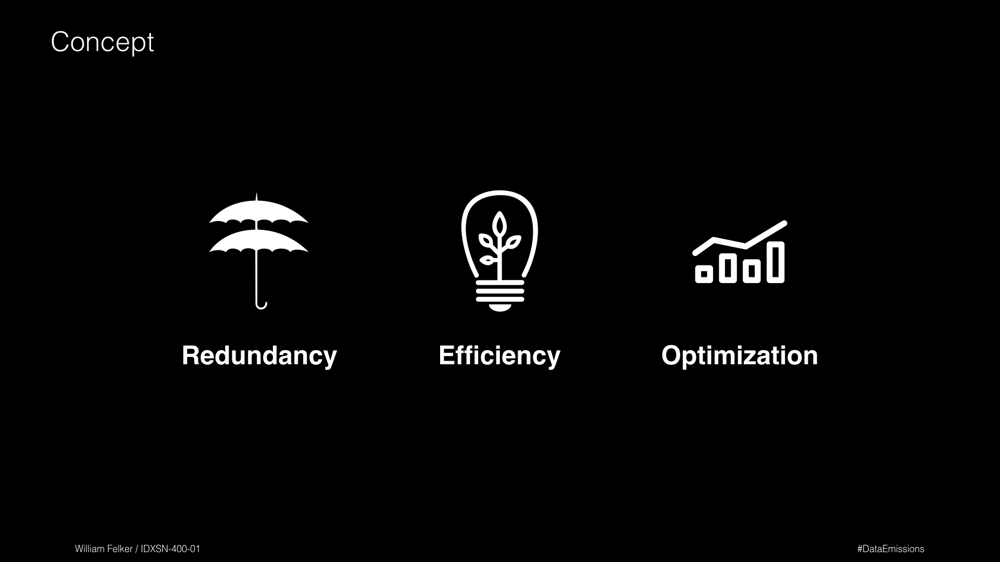
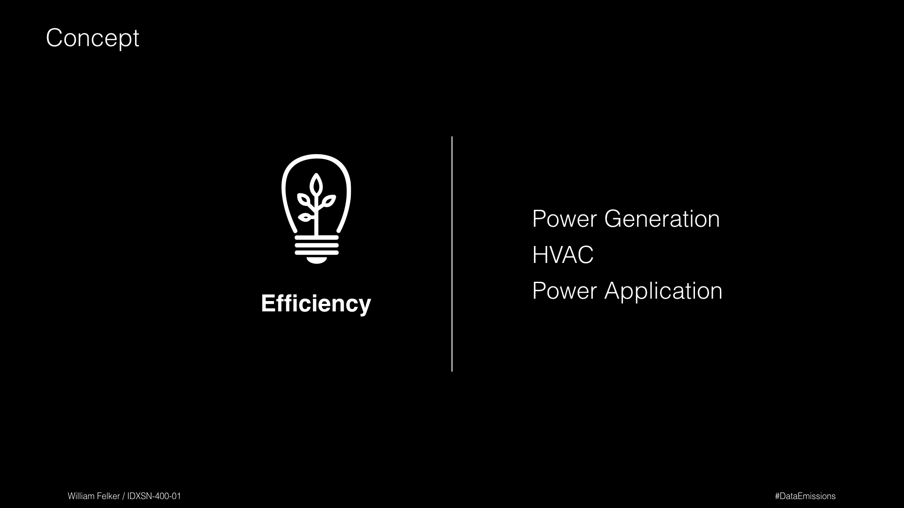

Instruction
I have vivid memories growing up of battling the covenant online in halo and video chatting with family across the country. Over time this love has perpetually grown as my bandwidth has increased from 64KB/s to 120MB/s. Recently, I have taken my data footprint to a new scale by cutting the cord and automating my life with services like IFTTT and Evernote. Despite all of this joy between the internet and me, we have an unhealthy relationship and we need to have an intervention.
The cost of ♥️.
There have been two major events causing me to question my relationship with the internet. One has been my coursework at California College of the Arts that addresses various aspects of sustainability. The second has been reading the May 2015 Greenpeace Click Clean Report, which focuses on evaluating the nation's largest data centers based on the methods they use to power themselves.
I began to connect the dots. Sure, driving a car has an impact. We even rate them based on mpg. But what could the effect of all this data really be on our wonderful little planet?
Where do I even start? Let's begin with T-Mobile, my cellular provider. It turns out the iPhone automatically tracks my data usage down to the application. So, for my current roaming period I have used about 40GB. But what is the impact of the 40GB?

Next, I investigated how much I use at home which should be the bulk of my usage. My Internet Service Provider (ISP), Comcast, also tracks that for me. Now I wanted to average these numbers being that September was exceptionally high which would bring my average usage to 3,300GB per month. So how many pounds of CO2 are released on average for 1 GB of data?

Gigabytes to CO2
I don’t know that we can be faulted for our addiction to the internet but we need to be made more aware of the impact. Yes, there are many ways in which the internet contributes to our society. Sociologically speaking products like Twitter, Instagram, and Snapchat have redefined how we communicate with each other as humans. Economically, Google, Amazon, and Kickstarter have changed how we purchase products from anywhere in the world. Yet, ecologically we need to grapple with the environmental impact of the internet and make clear improvements. I read an article by Justin Secor called The Web is inefficient, but we can fix it and calculated the impact 1GB of data had in terms of CO2 assuming that all data centers are created equal. My findings were that 1GB of hosted data creates about 2 lbs of CO2 per month released into the atmosphere.
1 GB = 2 LBS CO2
Given that my cumulative monthly data usage is 40GB+3,300GB= 3,340GB that would mean that I aid in generating 6,680lbs CO2 per month on average. This suggests that my digital footprint pollutes about 80,160 lbs CO2 per year.
A 💔
The idea of our data living in the ‘cloud’ is a positive though misleading metaphor. That’s not the reality in which we live. All of those little bytes streaming through fiberoptic cables across the globe to get us the new Adele song do have a quantifiable cost beyond your monthly bill.
I want to maintain my relationship with the internet but we need to push for more stringent requirements in evaluating these data centers and the products which they host. Greenpeace, for the last couple of years, has begun to evaluate data centers and give them a grade based on their Transparency, Energy Efficiency & Mitigation, Renewable Energy Deployment & Advocacy, and Renewable Energy Commitment & Siting Policy. LEED also certifies data centers, but only certifies the building itself. We need to go further, we must go futher. When the time comes for economics to push for a sustainable means of running data centers it will be too late. We cannot wait until we are out of coal or petroleum. We need to act now.
An Intervention
I am not going to stop using the internet, nor is it realistic to think that we should, but there is a necessary level of awareness and action that needs to be taken to prevent our consumption from ravaging our planet. We need to make it more sustainable by setting standards by which we can regulate data centers now and in the future. A portion of this advancement will naturally happen because of routine developments in technology; however, we still need to put standards in place to help propel future technologies in the right direction.
Research
I want to create a platform that centralizes the researching on how data is stored and consumed to build a more sustainable computing network.

Sustainability always becomes more complicated then I anticipate. So naturally my current project in "IxD 5: Sustainability" discovered that one of the most difficult parts was simply describing the ecosystem surounding my topic, data. I think this is partially due to the misleading notion that our ‘data’ lives in the ‘cloud’. So I created this simplified flow to breakdown how data flows from the data center to your device.
Key data points from Greenpeace
Where to focus

Means of evaluation






Feedback
Concept Feedback
It would be nice if the organization did not turn into just another government entity (It is not clear if you are proposing that it would or wouldn’t be.)
We are still run like a start up so we are scrappy which means the cheapest and best MVP wins overtime.
Our culture cares about being aware of how we make an impact, but we are still driven by the need to make enough money to survive.
Looking at the breakdown, we would definitely fit into the current means of evaluation. My fear is that as we begin to scale and take on companies like Amazon, we will continue to be scrappy but will fail of the proposed regulations because we are the underdog trying to take on a behemoth.
Could you add a category for legacy hardware. (We recycle our old drives and reuse the hardware.)
Future Points of Influence.
The only reason we would be inclined is because we are small and scrappy so portions of your proposal already fit in our current work flow.
Backblaze would heavily judge if they wanted to participate based on the other companies validating or backing the program. If this is a LEED extension program for example, we might be more inclined.
Could this platform focus more on showcasing good practices so we can use our collective knowledge to build better data facilities.
Think of it as crowd sourcing knowledge.
Crowd sourcing knowledge could create an expectation for better standards in terms of influence. In the beginning other companies thought Backblaze was cheating because no one thought of a way to optimize storage because no one could understand we were charging what we were and actually making money.
Credits
For: IXDSN-400-01 | IxD 5 Topic Studio: Sustainability
Project Date: October 2015
Project Length: 2 months
Team: Solo Project